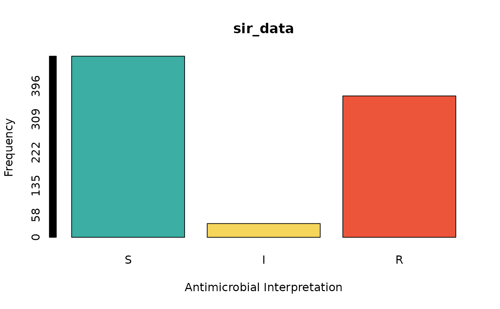

Clean up existing SIR values, or interpret minimum inhibitory concentration (MIC) values and disk diffusion diameters according to EUCAST or CLSI. as.sir() transforms the input to a new class sir, which is an ordered factor containing the levels S, SDD, I, R, NI.
These breakpoints are currently implemented:
For clinical microbiology: EUCAST 2011-2024 and CLSI 2011-2024;
For veterinary microbiology: EUCAST 2021-2024 and CLSI 2019-2024;
For ECOFFs (Epidemiological Cut-off Values): EUCAST 2020-2024 and CLSI 2022-2024.
All breakpoints used for interpretation are available in our clinical_breakpoints data set.
Usage
as.sir(x, ...)
NA_sir_
is.sir(x)
is_sir_eligible(x, threshold = 0.05)
# Default S3 method
as.sir(
x,
S = "^(S|U)+$",
I = "^(I)+$",
R = "^(R)+$",
NI = "^(N|NI|V)+$",
SDD = "^(SDD|D|H)+$",
...
)
# S3 method for class 'mic'
as.sir(
x,
mo = NULL,
ab = deparse(substitute(x)),
guideline = getOption("AMR_guideline", "EUCAST"),
uti = NULL,
conserve_capped_values = FALSE,
add_intrinsic_resistance = FALSE,
reference_data = AMR::clinical_breakpoints,
include_screening = getOption("AMR_include_screening", FALSE),
include_PKPD = getOption("AMR_include_PKPD", TRUE),
breakpoint_type = getOption("AMR_breakpoint_type", "human"),
host = NULL,
verbose = FALSE,
...
)
# S3 method for class 'disk'
as.sir(
x,
mo = NULL,
ab = deparse(substitute(x)),
guideline = getOption("AMR_guideline", "EUCAST"),
uti = NULL,
add_intrinsic_resistance = FALSE,
reference_data = AMR::clinical_breakpoints,
include_screening = getOption("AMR_include_screening", FALSE),
include_PKPD = getOption("AMR_include_PKPD", TRUE),
breakpoint_type = getOption("AMR_breakpoint_type", "human"),
host = NULL,
verbose = FALSE,
...
)
# S3 method for class 'data.frame'
as.sir(
x,
...,
col_mo = NULL,
guideline = getOption("AMR_guideline", "EUCAST"),
uti = NULL,
conserve_capped_values = FALSE,
add_intrinsic_resistance = FALSE,
reference_data = AMR::clinical_breakpoints,
include_screening = getOption("AMR_include_screening", FALSE),
include_PKPD = getOption("AMR_include_PKPD", TRUE),
breakpoint_type = getOption("AMR_breakpoint_type", "human"),
host = NULL,
verbose = FALSE
)
sir_interpretation_history(clean = FALSE)Source
For interpretations of minimum inhibitory concentration (MIC) values and disk diffusion diameters:
CLSI M39: Analysis and Presentation of Cumulative Antimicrobial Susceptibility Test Data, 2011-2024, Clinical and Laboratory Standards Institute (CLSI). https://clsi.org/standards/products/microbiology/documents/m39/.
CLSI M100: Performance Standard for Antimicrobial Susceptibility Testing, 2011-2024, Clinical and Laboratory Standards Institute (CLSI). https://clsi.org/standards/products/microbiology/documents/m100/.
CLSI VET01: Performance Standards for Antimicrobial Disk and Dilution Susceptibility Tests for Bacteria Isolated From Animals, 2019-2024, Clinical and Laboratory Standards Institute (CLSI). https://clsi.org/standards/products/veterinary-medicine/documents/vet01/.
CLSI VET09: Understanding Susceptibility Test Data as a Component of Antimicrobial Stewardship in Veterinary Settings, 2019-2024, Clinical and Laboratory Standards Institute (CLSI). https://clsi.org/standards/products/veterinary-medicine/documents/vet09/.
EUCAST Breakpoint tables for interpretation of MICs and zone diameters, 2011-2024, European Committee on Antimicrobial Susceptibility Testing (EUCAST). https://www.eucast.org/clinical_breakpoints.
WHONET as a source for machine-reading the clinical breakpoints (read more here), 1989-2024, WHO Collaborating Centre for Surveillance of Antimicrobial Resistance. https://whonet.org/.
Arguments
- x
vector of values (for class
mic: MIC values in mg/L, for classdisk: a disk diffusion radius in millimetres)- ...
for using on a data.frame: names of columns to apply
as.sir()on (supports tidy selection such ascolumn1:column4). Otherwise: arguments passed on to methods.- threshold
maximum fraction of invalid antimicrobial interpretations of
x, see Examples- S, I, R, NI, SDD
a case-independent regular expression to translate input to this result. This regular expression will be run after all non-letters and whitespaces are removed from the input.
- mo
a vector (or column name) with characters that can be coerced to valid microorganism codes with
as.mo(), can be left empty to determine it automatically- ab
a vector (or column name) with characters that can be coerced to a valid antimicrobial drug code with
as.ab()- guideline
defaults to EUCAST 2024 (the latest implemented EUCAST guideline in the clinical_breakpoints data set), but can be set with the package option
AMR_guideline. Currently supports EUCAST (2011-2024) and CLSI (2011-2024), see Details.- uti
(Urinary Tract Infection) a vector (or column name) with logicals (
TRUEorFALSE) to specify whether a UTI specific interpretation from the guideline should be chosen. For usingas.sir()on a data.frame, this can also be a column containing logicals or when left blank, the data set will be searched for a column 'specimen', and rows within this column containing 'urin' (such as 'urine', 'urina') will be regarded isolates from a UTI. See Examples.- conserve_capped_values
a logical to indicate that MIC values starting with
">"(but not">=") must always return "R" , and that MIC values starting with"<"(but not"<=") must always return "S"- add_intrinsic_resistance
(only useful when using a EUCAST guideline) a logical to indicate whether intrinsic antibiotic resistance must also be considered for applicable bug-drug combinations, meaning that e.g. ampicillin will always return "R" in Klebsiella species. Determination is based on the intrinsic_resistant data set, that itself is based on 'EUCAST Expert Rules' and 'EUCAST Intrinsic Resistance and Unusual Phenotypes' v3.3 (2021).
- reference_data
a data.frame to be used for interpretation, which defaults to the clinical_breakpoints data set. Changing this argument allows for using own interpretation guidelines. This argument must contain a data set that is equal in structure to the clinical_breakpoints data set (same column names and column types). Please note that the
guidelineargument will be ignored whenreference_datais manually set.- include_screening
a logical to indicate that clinical breakpoints for screening are allowed - the default is
FALSE. Can also be set with the package optionAMR_include_screening.- include_PKPD
a logical to indicate that PK/PD clinical breakpoints must be applied as a last resort - the default is
TRUE. Can also be set with the package optionAMR_include_PKPD.- breakpoint_type
the type of breakpoints to use, either "ECOFF", "animal", or "human". ECOFF stands for Epidemiological Cut-Off values. The default is
"human", which can also be set with the package optionAMR_breakpoint_type. Ifhostis set to values of veterinary species, this will automatically be set to"animal".- host
a vector (or column name) with characters to indicate the host. Only useful for veterinary breakpoints, as it requires
breakpoint_type = "animal". The values can be any text resembling the animal species, even in any of the 20 supported languages of this package. For foreign languages, be sure to set the language withset_AMR_locale()(though it will be automatically guessed based on the system language).- verbose
a logical to indicate that all notes should be printed during interpretation of MIC values or disk diffusion values.
- col_mo
column name of the names or codes of the microorganisms (see
as.mo()) - the default is the first column of classmo. Values will be coerced usingas.mo().- clean
a logical to indicate whether previously stored results should be forgotten after returning the 'logbook' with results
Value
Ordered factor with new class sir
Details
Note: The clinical breakpoints in this package were validated through, and imported from, WHONET. The public use of this AMR package has been endorsed by both CLSI and EUCAST. See clinical_breakpoints for more information.
How it Works
The as.sir() function can work in four ways:
For cleaning raw / untransformed data. The data will be cleaned to only contain valid values, namely: S for susceptible, I for intermediate or 'susceptible, increased exposure', R for resistant, NI for non-interpretable, and SDD for susceptible dose-dependent. Each of these can be set using a regular expression. Furthermore,
as.sir()will try its best to clean with some intelligence. For example, mixed values with SIR interpretations and MIC values such as"<0.25; S"will be coerced to"S". Combined interpretations for multiple test methods (as seen in laboratory records) such as"S; S"will be coerced to"S", but a value like"S; I"will returnNAwith a warning that the input is invalid.For interpreting minimum inhibitory concentration (MIC) values according to EUCAST or CLSI. You must clean your MIC values first using
as.mic(), that also gives your columns the new data classmic. Also, be sure to have a column with microorganism names or codes. It will be found automatically, but can be set manually using themoargument.Using
dplyr, SIR interpretation can be done very easily with either:your_data %>% mutate_if(is.mic, as.sir) your_data %>% mutate(across(where(is.mic), as.sir)) your_data %>% mutate_if(is.mic, as.sir, ab = "column_with_antibiotics", mo = "column_with_microorganisms") your_data %>% mutate_if(is.mic, as.sir, ab = c("cipro", "ampicillin", ...), mo = c("E. coli", "K. pneumoniae", ...)) # for veterinary breakpoints, also set `host`: your_data %>% mutate_if(is.mic, as.sir, host = "column_with_animal_species", guideline = "CLSI")Operators like "<=" will be stripped before interpretation. When using
conserve_capped_values = TRUE, an MIC value of e.g. ">2" will always return "R", even if the breakpoint according to the chosen guideline is ">=4". This is to prevent that capped values from raw laboratory data would not be treated conservatively. The default behaviour (conserve_capped_values = FALSE) considers ">2" to be lower than ">=4" and might in this case return "S" or "I".
For interpreting disk diffusion diameters according to EUCAST or CLSI. You must clean your disk zones first using
as.disk(), that also gives your columns the new data classdisk. Also, be sure to have a column with microorganism names or codes. It will be found automatically, but can be set manually using themoargument.Using
dplyr, SIR interpretation can be done very easily with either:your_data %>% mutate_if(is.disk, as.sir) your_data %>% mutate(across(where(is.disk), as.sir)) your_data %>% mutate_if(is.disk, as.sir, ab = "column_with_antibiotics", mo = "column_with_microorganisms") your_data %>% mutate_if(is.disk, as.sir, ab = c("cipro", "ampicillin", ...), mo = c("E. coli", "K. pneumoniae", ...)) # for veterinary breakpoints, also set `host`: your_data %>% mutate_if(is.disk, as.sir, host = "column_with_animal_species", guideline = "CLSI")
For interpreting a complete data set, with automatic determination of MIC values, disk diffusion diameters, microorganism names or codes, and antimicrobial test results. This is done very simply by running
as.sir(your_data).
For points 2, 3 and 4: Use sir_interpretation_history() to retrieve a data.frame (or tibble if the tibble package is installed) with all results of the last as.sir() call.
Supported Guidelines
For interpreting MIC values as well as disk diffusion diameters, currently implemented guidelines are for clinical microbiology: EUCAST 2011-2024 and CLSI 2011-2024, and for veterinary microbiology: EUCAST 2021-2024 and CLSI 2019-2024.
Thus, the guideline argument must be set to e.g., "EUCAST 2024" or "CLSI 2024". By simply using "EUCAST" (the default) or "CLSI" as input, the latest included version of that guideline will automatically be selected. You can set your own data set using the reference_data argument. The guideline argument will then be ignored.
You can set the default guideline with the package option AMR_guideline (e.g. in your .Rprofile file), such as:
options(AMR_guideline = "CLSI")
options(AMR_guideline = "CLSI 2018")
options(AMR_guideline = "EUCAST 2020")
# or to reset:
options(AMR_guideline = NULL)For veterinary guidelines, these might be the best options:
When applying veterinary breakpoints (by setting host or by setting breakpoint_type = "animal"), the CLSI VET09 guideline will be applied to cope with missing animal species-specific breakpoints.
After Interpretation
After using as.sir(), you can use the eucast_rules() defined by EUCAST to (1) apply inferred susceptibility and resistance based on results of other antimicrobials and (2) apply intrinsic resistance based on taxonomic properties of a microorganism.
To determine which isolates are multi-drug resistant, be sure to run mdro() (which applies the MDR/PDR/XDR guideline from 2012 at default) on a data set that contains S/I/R values. Read more about interpreting multidrug-resistant organisms here.
Machine-Readable Clinical Breakpoints
The repository of this package contains a machine-readable version of all guidelines. This is a CSV file consisting of 34 063 rows and 14 columns. This file is machine-readable, since it contains one row for every unique combination of the test method (MIC or disk diffusion), the antimicrobial drug and the microorganism. This allows for easy implementation of these rules in laboratory information systems (LIS). Note that it only contains interpretation guidelines for humans - interpretation guidelines from CLSI for animals were removed.
Other
The function is.sir() detects if the input contains class sir. If the input is a data.frame, it iterates over all columns and returns a logical vector.
The base R function as.double() can be used to retrieve quantitative values from a sir object: "S" = 1, "I"/"SDD" = 2, "R" = 3. All other values are rendered NA . Note: Do not use as.integer(), since that (because of how R works internally) will return the factor level indices, and not these aforementioned quantitative values.
The function is_sir_eligible() returns TRUE when a column contains at most 5% invalid antimicrobial interpretations (not S and/or I and/or R and/or NI and/or SDD), and FALSE otherwise. The threshold of 5% can be set with the threshold argument. If the input is a data.frame, it iterates over all columns and returns a logical vector.
NA_sir_ is a missing value of the new sir class, analogous to e.g. base R's NA_character_.
Interpretation of SIR
In 2019, the European Committee on Antimicrobial Susceptibility Testing (EUCAST) has decided to change the definitions of susceptibility testing categories S, I, and R as shown below (https://www.eucast.org/newsiandr):
S - Susceptible, standard dosing regimen
A microorganism is categorised as "Susceptible, standard dosing regimen", when there is a high likelihood of therapeutic success using a standard dosing regimen of the agent.I - Susceptible, increased exposure
A microorganism is categorised as "Susceptible, Increased exposure" when there is a high likelihood of therapeutic success because exposure to the agent is increased by adjusting the dosing regimen or by its concentration at the site of infection.R = Resistant
A microorganism is categorised as "Resistant" when there is a high likelihood of therapeutic failure even when there is increased exposure.Exposure is a function of how the mode of administration, dose, dosing interval, infusion time, as well as distribution and excretion of the antimicrobial agent will influence the infecting organism at the site of infection.
This AMR package honours this insight. Use susceptibility() (equal to proportion_SI()) to determine antimicrobial susceptibility and count_susceptible() (equal to count_SI()) to count susceptible isolates.
Reference Data Publicly Available
All data sets in this AMR package (about microorganisms, antibiotics, SIR interpretation, EUCAST rules, etc.) are publicly and freely available for download in the following formats: R, MS Excel, Apache Feather, Apache Parquet, SPSS, and Stata. We also provide tab-separated plain text files that are machine-readable and suitable for input in any software program, such as laboratory information systems. Please visit our website for the download links. The actual files are of course available on our GitHub repository.
Examples
example_isolates
#> # A tibble: 2,000 × 46
#> date patient age gender ward mo PEN OXA FLC AMX
#> <date> <chr> <dbl> <chr> <chr> <mo> <sir> <sir> <sir> <sir>
#> 1 2002-01-02 A77334 65 F Clinical B_ESCHR_COLI R NA NA NA
#> 2 2002-01-03 A77334 65 F Clinical B_ESCHR_COLI R NA NA NA
#> 3 2002-01-07 067927 45 F ICU B_STPHY_EPDR R NA R NA
#> 4 2002-01-07 067927 45 F ICU B_STPHY_EPDR R NA R NA
#> 5 2002-01-13 067927 45 F ICU B_STPHY_EPDR R NA R NA
#> 6 2002-01-13 067927 45 F ICU B_STPHY_EPDR R NA R NA
#> 7 2002-01-14 462729 78 M Clinical B_STPHY_AURS R NA S R
#> 8 2002-01-14 462729 78 M Clinical B_STPHY_AURS R NA S R
#> 9 2002-01-16 067927 45 F ICU B_STPHY_EPDR R NA R NA
#> 10 2002-01-17 858515 79 F ICU B_STPHY_EPDR R NA S NA
#> # ℹ 1,990 more rows
#> # ℹ 36 more variables: AMC <sir>, AMP <sir>, TZP <sir>, CZO <sir>, FEP <sir>,
#> # CXM <sir>, FOX <sir>, CTX <sir>, CAZ <sir>, CRO <sir>, GEN <sir>,
#> # TOB <sir>, AMK <sir>, KAN <sir>, TMP <sir>, SXT <sir>, NIT <sir>,
#> # FOS <sir>, LNZ <sir>, CIP <sir>, MFX <sir>, VAN <sir>, TEC <sir>,
#> # TCY <sir>, TGC <sir>, DOX <sir>, ERY <sir>, CLI <sir>, AZM <sir>,
#> # IPM <sir>, MEM <sir>, MTR <sir>, CHL <sir>, COL <sir>, MUP <sir>, …
summary(example_isolates) # see all SIR results at a glance
#> date patient age gender
#> Min. :2002-01-02 Length:2000 Min. : 0.00 Length:2000
#> 1st Qu.:2005-07-31 Class :character 1st Qu.:63.00 Class :character
#> Median :2009-07-31 Mode :character Median :74.00 Mode :character
#> Mean :2009-11-20 Mean :70.69
#> 3rd Qu.:2014-05-30 3rd Qu.:82.00
#> Max. :2017-12-28 Max. :97.00
#> ward mo PEN
#> Length:2000 Class :mo Class:sir
#> Class :character <NA> :0 %S :25.6% (n=417)
#> Mode :character Unique:90 %SDD : 0.0% (n=0)
#> #1 :B_ESCHR_COLI %I : 0.7% (n=11)
#> #2 :B_STPHY_CONS %R :73.7% (n=1201)
#> #3 :B_STPHY_AURS %NI : 0.0% (n=0)
#> OXA FLC AMX
#> Class:sir Class:sir Class:sir
#> %S :68.8% (n=251) %S :70.5% (n=665) %S :40.2% (n=543)
#> %SDD : 0.0% (n=0) %SDD : 0.0% (n=0) %SDD : 0.0% (n=0)
#> %I : 0.0% (n=0) %I : 0.0% (n=0) %I : 0.2% (n=3)
#> %R :31.2% (n=114) %R :29.5% (n=278) %R :59.6% (n=804)
#> %NI : 0.0% (n=0) %NI : 0.0% (n=0) %NI : 0.0% (n=0)
#> AMC AMP TZP
#> Class:sir Class:sir Class:sir
#> %S :71.4% (n=1342) %S :40.2% (n=543) %S :86.1% (n=862)
#> %SDD : 0.0% (n=0) %SDD : 0.0% (n=0) %SDD : 0.0% (n=0)
#> %I : 4.8% (n=91) %I : 0.2% (n=3) %I : 1.3% (n=13)
#> %R :23.7% (n=446) %R :59.6% (n=804) %R :12.6% (n=126)
#> %NI : 0.0% (n=0) %NI : 0.0% (n=0) %NI : 0.0% (n=0)
#> CZO FEP CXM
#> Class:sir Class:sir Class:sir
#> %S :54.9% (n=245) %S :85.6% (n=620) %S :72.5% (n=1297)
#> %SDD : 0.0% (n=0) %SDD : 0.0% (n=0) %SDD : 0.0% (n=0)
#> %I : 0.4% (n=2) %I : 0.1% (n=1) %I : 1.2% (n=22)
#> %R :44.6% (n=199) %R :14.2% (n=103) %R :26.3% (n=470)
#> %NI : 0.0% (n=0) %NI : 0.0% (n=0) %NI : 0.0% (n=0)
#> FOX CTX CAZ
#> Class:sir Class:sir Class:sir
#> %S :71.6% (n=586) %S :84.4% (n=796) %S :33.5% (n=607)
#> %SDD : 0.0% (n=0) %SDD : 0.0% (n=0) %SDD : 0.0% (n=0)
#> %I : 1.0% (n=8) %I : 0.1% (n=1) %I : 0.0% (n=0)
#> %R :27.4% (n=224) %R :15.5% (n=146) %R :66.5% (n=1204)
#> %NI : 0.0% (n=0) %NI : 0.0% (n=0) %NI : 0.0% (n=0)
#> CRO GEN TOB
#> Class:sir Class:sir Class:sir
#> %S :84.4% (n=796) %S :74.0% (n=1372) %S :65.1% (n=879)
#> %SDD : 0.0% (n=0) %SDD : 0.0% (n=0) %SDD : 0.0% (n=0)
#> %I : 0.1% (n=1) %I : 1.5% (n=27) %I : 0.5% (n=7)
#> %R :15.5% (n=146) %R :24.6% (n=456) %R :34.4% (n=465)
#> %NI : 0.0% (n=0) %NI : 0.0% (n=0) %NI : 0.0% (n=0)
#> AMK KAN TMP
#> Class:sir Class:sir Class:sir
#> %S :36.3% (n=251) %S : 0.0% (n=0) %S :61.2% (n=918)
#> %SDD : 0.0% (n=0) %SDD : 0.0% (n=0) %SDD : 0.0% (n=0)
#> %I : 0.0% (n=0) %I : 0.0% (n=0) %I : 0.7% (n=10)
#> %R :63.7% (n=441) %R :100.0% (n=471) %R :38.1% (n=571)
#> %NI : 0.0% (n=0) %NI : 0.0% (n=0) %NI : 0.0% (n=0)
#> SXT NIT FOS
#> Class:sir Class:sir Class:sir
#> %S :79.1% (n=1392) %S :76.0% (n=565) %S :57.8% (n=203)
#> %SDD : 0.0% (n=0) %SDD : 0.0% (n=0) %SDD : 0.0% (n=0)
#> %I : 0.3% (n=6) %I : 6.9% (n=51) %I : 0.0% (n=0)
#> %R :20.5% (n=361) %R :17.1% (n=127) %R :42.2% (n=148)
#> %NI : 0.0% (n=0) %NI : 0.0% (n=0) %NI : 0.0% (n=0)
#> LNZ CIP MFX
#> Class:sir Class:sir Class:sir
#> %S :30.7% (n=314) %S :78.9% (n=1112) %S :64.5% (n=136)
#> %SDD : 0.0% (n=0) %SDD : 0.0% (n=0) %SDD : 0.0% (n=0)
#> %I : 0.0% (n=0) %I : 4.9% (n=69) %I : 1.9% (n=4)
#> %R :69.3% (n=709) %R :16.2% (n=228) %R :33.6% (n=71)
#> %NI : 0.0% (n=0) %NI : 0.0% (n=0) %NI : 0.0% (n=0)
#> VAN TEC TCY
#> Class:sir Class:sir Class:sir
#> %S :61.7% (n=1149) %S :24.3% (n=237) %S :68.3% (n=820)
#> %SDD : 0.0% (n=0) %SDD : 0.0% (n=0) %SDD : 0.0% (n=0)
#> %I : 0.0% (n=0) %I : 0.0% (n=0) %I : 1.9% (n=23)
#> %R :38.3% (n=712) %R :75.7% (n=739) %R :29.8% (n=357)
#> %NI : 0.0% (n=0) %NI : 0.0% (n=0) %NI : 0.0% (n=0)
#> TGC DOX ERY
#> Class:sir Class:sir Class:sir
#> %S :87.3% (n=697) %S :71.7% (n=814) %S :42.3% (n=801)
#> %SDD : 0.0% (n=0) %SDD : 0.0% (n=0) %SDD : 0.0% (n=0)
#> %I : 0.0% (n=0) %I : 0.6% (n=7) %I : 0.5% (n=9)
#> %R :12.7% (n=101) %R :27.7% (n=315) %R :57.2% (n=1084)
#> %NI : 0.0% (n=0) %NI : 0.0% (n=0) %NI : 0.0% (n=0)
#> CLI AZM IPM
#> Class:sir Class:sir Class:sir
#> %S :38.6% (n=586) %S :42.3% (n=801) %S :92.7% (n=824)
#> %SDD : 0.0% (n=0) %SDD : 0.0% (n=0) %SDD : 0.0% (n=0)
#> %I : 0.3% (n=4) %I : 0.5% (n=9) %I : 1.1% (n=10)
#> %R :61.2% (n=930) %R :57.2% (n=1084) %R : 6.2% (n=55)
#> %NI : 0.0% (n=0) %NI : 0.0% (n=0) %NI : 0.0% (n=0)
#> MEM MTR CHL
#> Class:sir Class:sir Class:sir
#> %S :94.1% (n=780) %S :85.3% (n=29) %S :78.6% (n=121)
#> %SDD : 0.0% (n=0) %SDD : 0.0% (n=0) %SDD : 0.0% (n=0)
#> %I : 0.0% (n=0) %I : 0.0% (n=0) %I : 0.0% (n=0)
#> %R : 5.9% (n=49) %R :14.7% (n=5) %R :21.4% (n=33)
#> %NI : 0.0% (n=0) %NI : 0.0% (n=0) %NI : 0.0% (n=0)
#> COL MUP RIF
#> Class:sir Class:sir Class:sir
#> %S :18.8% (n=309) %S :93.0% (n=251) %S :30.2% (n=303)
#> %SDD : 0.0% (n=0) %SDD : 0.0% (n=0) %SDD : 0.0% (n=0)
#> %I : 0.0% (n=0) %I : 1.1% (n=3) %I : 0.2% (n=2)
#> %R :81.2% (n=1331) %R : 5.9% (n=16) %R :69.6% (n=698)
#> %NI : 0.0% (n=0) %NI : 0.0% (n=0) %NI : 0.0% (n=0)
# For INTERPRETING disk diffusion and MIC values -----------------------
# example data sets, with combined MIC values and disk zones
df_wide <- data.frame(
microorganism = "Escherichia coli",
amoxicillin = as.mic(8),
cipro = as.mic(0.256),
tobra = as.disk(16),
genta = as.disk(18),
ERY = "R"
)
df_long <- data.frame(
bacteria = rep("Escherichia coli", 4),
antibiotic = c("amoxicillin", "cipro", "tobra", "genta"),
mics = as.mic(c(0.01, 1, 4, 8)),
disks = as.disk(c(6, 10, 14, 18))
)
# \donttest{
## Using dplyr -------------------------------------------------
if (require("dplyr")) {
# approaches that all work without additional arguments:
df_wide %>% mutate_if(is.mic, as.sir)
df_wide %>% mutate_if(function(x) is.mic(x) | is.disk(x), as.sir)
df_wide %>% mutate(across(where(is.mic), as.sir))
df_wide %>% mutate_at(vars(amoxicillin:tobra), as.sir)
df_wide %>% mutate(across(amoxicillin:tobra, as.sir))
# approaches that all work with additional arguments:
df_long %>%
# given a certain data type, e.g. MIC values
mutate_if(is.mic, as.sir,
mo = "bacteria",
ab = "antibiotic",
guideline = "CLSI")
df_long %>%
mutate(across(where(is.mic),
function(x) as.sir(x,
mo = "bacteria",
ab = "antibiotic",
guideline = "CLSI")))
df_wide %>%
# given certain columns, e.g. from 'cipro' to 'genta'
mutate_at(vars(cipro:genta), as.sir,
mo = "bacteria",
guideline = "CLSI")
df_wide %>%
mutate(across(cipro:genta,
function(x) as.sir(x,
mo = "bacteria",
guideline = "CLSI")))
# for veterinary breakpoints, add 'host':
df_long$animal_species <- c("cats", "dogs", "horses", "cattle")
df_long %>%
# given a certain data type, e.g. MIC values
mutate_if(is.mic, as.sir,
mo = "bacteria",
ab = "antibiotic",
host = "animal_species",
guideline = "CLSI")
df_long %>%
mutate(across(where(is.mic),
function(x) as.sir(x,
mo = "bacteria",
ab = "antibiotic",
host = "animal_species",
guideline = "CLSI")))
df_wide %>%
mutate_at(vars(cipro:genta), as.sir,
mo = "bacteria",
ab = "antibiotic",
host = "animal_species",
guideline = "CLSI")
df_wide %>%
mutate(across(cipro:genta,
function(x) as.sir(x,
mo = "bacteria",
host = "animal_species",
guideline = "CLSI")))
# to include information about urinary tract infections (UTI)
data.frame(mo = "E. coli",
nitrofuratoin = c("<= 2", 32),
from_the_bladder = c(TRUE, FALSE)) %>%
as.sir(uti = "from_the_bladder")
data.frame(mo = "E. coli",
nitrofuratoin = c("<= 2", 32),
specimen = c("urine", "blood")) %>%
as.sir() # automatically determines urine isolates
df_wide %>%
mutate_at(vars(cipro:genta), as.sir, mo = "E. coli", uti = TRUE)
}
#>
#> ℹ Run sir_interpretation_history() afterwards to retrieve a logbook with
#> all the details of the breakpoint interpretations.
#> Interpreting MIC values: 'amoxicillin' (AMX) based on column
#> 'microorganism', EUCAST 2024...
#> NOTE
#> • Breakpoints for UTI and non-UTI available for amoxicillin (AMX) in Escherichia coli - assuming body site 'Intravenous'. Use argument uti to set which isolates are from urine. See ?as.sir.
#> Interpreting MIC values: 'cipro' (CIP, ciprofloxacin) based on column
#> 'microorganism', EUCAST 2024...
#> NOTE
#> • Multiple breakpoints available for ciprofloxacin (CIP) in Escherichia coli - assuming body site 'Non-meningitis'.
#>
#> ℹ Run sir_interpretation_history() afterwards to retrieve a logbook with
#> all the details of the breakpoint interpretations.
#> Interpreting MIC values: 'amoxicillin' (AMX) based on column
#> 'microorganism', EUCAST 2024...
#> NOTE
#> • Breakpoints for UTI and non-UTI available for amoxicillin (AMX) in Escherichia coli - assuming body site 'Intravenous'. Use argument uti to set which isolates are from urine. See ?as.sir.
#> Interpreting MIC values: 'cipro' (CIP, ciprofloxacin) based on column
#> 'microorganism', EUCAST 2024...
#> NOTE
#> • Multiple breakpoints available for ciprofloxacin (CIP) in Escherichia coli - assuming body site 'Non-meningitis'.
#> Interpreting disk diffusion zones: 'tobra' (TOB, tobramycin) based on
#> column 'microorganism', EUCAST 2024...
#> NOTE
#> • Breakpoints for UTI and non-UTI available for tobramycin (TOB) in Escherichia coli - assuming an unspecified body site. Use argument uti to set which isolates are from urine. See ?as.sir.
#> Interpreting disk diffusion zones: 'genta' (GEN, gentamicin) based on
#> column 'microorganism', EUCAST 2024...
#> NOTE
#> • Breakpoints for UTI and non-UTI available for gentamicin (GEN) in Escherichia coli - assuming an unspecified body site. Use argument uti to set which isolates are from urine. See ?as.sir.
#>
#> ℹ Run sir_interpretation_history() afterwards to retrieve a logbook with
#> all the details of the breakpoint interpretations.
#> Interpreting MIC values: 'amoxicillin' (AMX) based on column
#> 'microorganism', EUCAST 2024...
#> NOTE
#> • Breakpoints for UTI and non-UTI available for amoxicillin (AMX) in Escherichia coli - assuming body site 'Intravenous'. Use argument uti to set which isolates are from urine. See ?as.sir.
#> Interpreting MIC values: 'cipro' (CIP, ciprofloxacin) based on column
#> 'microorganism', EUCAST 2024...
#> NOTE
#> • Multiple breakpoints available for ciprofloxacin (CIP) in Escherichia coli - assuming body site 'Non-meningitis'.
#>
#> ℹ Run sir_interpretation_history() afterwards to retrieve a logbook with
#> all the details of the breakpoint interpretations.
#> Interpreting MIC values: 'amoxicillin' (AMX) based on column
#> 'microorganism', EUCAST 2024...
#> NOTE
#> • Breakpoints for UTI and non-UTI available for amoxicillin (AMX) in Escherichia coli - assuming body site 'Intravenous'. Use argument uti to set which isolates are from urine. See ?as.sir.
#> Interpreting MIC values: 'cipro' (CIP, ciprofloxacin) based on column
#> 'microorganism', EUCAST 2024...
#> NOTE
#> • Multiple breakpoints available for ciprofloxacin (CIP) in Escherichia coli - assuming body site 'Non-meningitis'.
#> Interpreting disk diffusion zones: 'tobra' (TOB, tobramycin) based on
#> column 'microorganism', EUCAST 2024...
#> NOTE
#> • Breakpoints for UTI and non-UTI available for tobramycin (TOB) in Escherichia coli - assuming an unspecified body site. Use argument uti to set which isolates are from urine. See ?as.sir.
#>
#> ℹ Run sir_interpretation_history() afterwards to retrieve a logbook with
#> all the details of the breakpoint interpretations.
#> Interpreting MIC values: 'amoxicillin' (AMX) based on column
#> 'microorganism', EUCAST 2024...
#> NOTE
#> • Breakpoints for UTI and non-UTI available for amoxicillin (AMX) in Escherichia coli - assuming body site 'Intravenous'. Use argument uti to set which isolates are from urine. See ?as.sir.
#> Interpreting MIC values: 'cipro' (CIP, ciprofloxacin) based on column
#> 'microorganism', EUCAST 2024...
#> NOTE
#> • Multiple breakpoints available for ciprofloxacin (CIP) in Escherichia coli - assuming body site 'Non-meningitis'.
#> Interpreting disk diffusion zones: 'tobra' (TOB, tobramycin) based on
#> column 'microorganism', EUCAST 2024...
#> NOTE
#> • Breakpoints for UTI and non-UTI available for tobramycin (TOB) in Escherichia coli - assuming an unspecified body site. Use argument uti to set which isolates are from urine. See ?as.sir.
#>
#> ℹ Run sir_interpretation_history() afterwards to retrieve a logbook with
#> all the details of the breakpoint interpretations.
#> Interpreting MIC values: 'amoxicillin' (AMX), 'cipro' (CIP, ciprofloxacin),
#> 'tobra' (TOB, tobramycin), and 'genta' (GEN, gentamicin) based on column
#> 'bacteria', CLSI 2024...
#> OK
#>
#> ℹ Run sir_interpretation_history() afterwards to retrieve a logbook with
#> all the details of the breakpoint interpretations.
#> Interpreting MIC values: 'amoxicillin' (AMX), 'cipro' (CIP, ciprofloxacin),
#> 'tobra' (TOB, tobramycin), and 'genta' (GEN, gentamicin) based on column
#> 'bacteria', CLSI 2024...
#> OK
#>
#> ℹ Run sir_interpretation_history() afterwards to retrieve a logbook with
#> all the details of the breakpoint interpretations.
#> Interpreting MIC values: 'cipro' (CIP, ciprofloxacin), CLSI 2024...
#> OK
#> Interpreting disk diffusion zones: 'tobra' (TOB, tobramycin), CLSI 2024...
#> OK
#> Interpreting disk diffusion zones: 'genta' (GEN, gentamicin), CLSI 2024...
#> OK
#>
#> ℹ Run sir_interpretation_history() afterwards to retrieve a logbook with
#> all the details of the breakpoint interpretations.
#> Interpreting MIC values: 'cipro' (CIP, ciprofloxacin), CLSI 2024...
#> OK
#> Interpreting disk diffusion zones: 'tobra' (TOB, tobramycin), CLSI 2024...
#> OK
#> Interpreting disk diffusion zones: 'genta' (GEN, gentamicin), CLSI 2024...
#> OK
#>
#> ℹ Run sir_interpretation_history() afterwards to retrieve a logbook with
#> all the details of the breakpoint interpretations.
#> ℹ Assuming breakpoint_type = "animal", since host is set.
#> ℹ Please note that in the absence of specific veterinary breakpoints for
#> certain animal hosts, the CLSI guideline VET09 will be applied where
#> possible.
#> Interpreting MIC values: 'amoxicillin' (AMX), 'cipro' (CIP, ciprofloxacin),
#> 'tobra' (TOB, tobramycin), and 'genta' (GEN, gentamicin) based on column
#> 'bacteria', CLSI 2024...
#> OK
#>
#> ℹ Run sir_interpretation_history() afterwards to retrieve a logbook with
#> all the details of the breakpoint interpretations.
#> ℹ Assuming breakpoint_type = "animal", since host is set.
#> ℹ Please note that in the absence of specific veterinary breakpoints for
#> certain animal hosts, the CLSI guideline VET09 will be applied where
#> possible.
#> Interpreting MIC values: 'amoxicillin' (AMX), 'cipro' (CIP, ciprofloxacin),
#> 'tobra' (TOB, tobramycin), and 'genta' (GEN, gentamicin) based on column
#> 'bacteria', CLSI 2024...
#> OK
#>
#> ℹ Run sir_interpretation_history() afterwards to retrieve a logbook with
#> all the details of the breakpoint interpretations.
#> ℹ Assuming breakpoint_type = "animal", since host is set.
#>
#> ℹ Please note that in the absence of specific veterinary breakpoints for
#> certain animal hosts, the CLSI guideline VET09 will be applied where
#> possible.
#> Interpreting MIC values: 'antibiotic' (TESTAB, test Antibiotic), CLSI
#> 2024...
#> WARNING
#> • No CLSI 2024 MIC breakpoints available for test Antibiotic (TESTAB).
#> Interpreting disk diffusion zones: 'antibiotic' (TESTAB, test Antibiotic),
#> CLSI 2024...
#> WARNING
#> • No CLSI 2024 DISK breakpoints available for test Antibiotic (TESTAB).
#> Interpreting disk diffusion zones: 'antibiotic' (TESTAB, test Antibiotic),
#> CLSI 2024...
#> WARNING
#> • No CLSI 2024 DISK breakpoints available for test Antibiotic (TESTAB).
#> Warning: There was 1 warning in `mutate()`.
#> ℹ In argument: `cipro = (function (x, ...) ...`.
#> Caused by warning:
#> ! The following animal host(s) could not be coerced: "animal_species"
#>
#> ℹ Run sir_interpretation_history() afterwards to retrieve a logbook with
#> all the details of the breakpoint interpretations.
#> ℹ Assuming breakpoint_type = "animal", since host is set.
#>
#> ℹ Please note that in the absence of specific veterinary breakpoints for
#> certain animal hosts, the CLSI guideline VET09 will be applied where
#> possible.
#> Interpreting MIC values: 'cipro' (CIP, ciprofloxacin), CLSI 2024...
#> OK
#> Interpreting disk diffusion zones: 'tobra' (TOB, tobramycin), CLSI 2024...
#> OK
#> Interpreting disk diffusion zones: 'genta' (GEN, gentamicin), CLSI 2024...
#> OK
#> Warning: There was 1 warning in `mutate()`.
#> ℹ In argument: `across(...)`.
#> Caused by warning:
#> ! The following animal host(s) could not be coerced: "animal_species"
#>
#> ℹ Run sir_interpretation_history() afterwards to retrieve a logbook with
#> all the details of the breakpoint interpretations.
#> Interpreting MIC values: column 'nitrofuratoin' (NIT, nitrofurantoin),
#> EUCAST 2024...
#> OK
#> ℹ Assuming value "urine" in column 'specimen' reflects a urinary tract
#> infection.
#> Use as.sir(uti = FALSE) to prevent this.
#>
#> ℹ Run sir_interpretation_history() afterwards to retrieve a logbook with
#> all the details of the breakpoint interpretations.
#> Interpreting MIC values: column 'nitrofuratoin' (NIT, nitrofurantoin),
#> EUCAST 2024...
#> OK
#>
#> ℹ Run sir_interpretation_history() afterwards to retrieve a logbook with
#> all the details of the breakpoint interpretations.
#> Interpreting MIC values: 'cipro' (CIP, ciprofloxacin), EUCAST 2024...
#> OK
#> Interpreting disk diffusion zones: 'tobra' (TOB, tobramycin), EUCAST
#> 2024...
#> OK
#> Interpreting disk diffusion zones: 'genta' (GEN, gentamicin), EUCAST
#> 2024...
#> OK
#> microorganism amoxicillin cipro tobra genta ERY
#> 1 Escherichia coli 8 S <NA> <NA> R
## Using base R ------------------------------------------------
as.sir(df_wide)
#>
#> ℹ Run sir_interpretation_history() afterwards to retrieve a logbook with
#> all the details of the breakpoint interpretations.
#> Interpreting MIC values: column 'amoxicillin' (AMX), EUCAST 2024...
#> NOTE
#> • Breakpoints for UTI and non-UTI available for amoxicillin (AMX) in Escherichia coli - assuming body site 'Intravenous'. Use argument uti to set which isolates are from urine. See ?as.sir.
#> Interpreting MIC values: column 'cipro' (CIP, ciprofloxacin), EUCAST
#> 2024...
#> NOTE
#> • Multiple breakpoints available for ciprofloxacin (CIP) in Escherichia coli - assuming body site 'Non-meningitis'.
#> Interpreting disk diffusion zones: column 'tobra' (TOB, tobramycin), EUCAST
#> 2024...
#> NOTE
#> • Breakpoints for UTI and non-UTI available for tobramycin (TOB) in Escherichia coli - assuming an unspecified body site. Use argument uti to set which isolates are from urine. See ?as.sir.
#> Interpreting disk diffusion zones: column 'genta' (GEN, gentamicin), EUCAST
#> 2024...
#> NOTE
#> • Breakpoints for UTI and non-UTI available for gentamicin (GEN) in Escherichia coli - assuming an unspecified body site. Use argument uti to set which isolates are from urine. See ?as.sir.
#> Assigning class 'sir' to already clean column 'ERY' (erythromycin)...
#> OK
#> microorganism amoxicillin cipro tobra genta ERY
#> 1 Escherichia coli S I S S R
# return a 'logbook' about the results:
sir_interpretation_history()
#> # A tibble: 57 × 16
#> datetime index ab_given mo_given host_given ab mo
#> * <dttm> <int> <chr> <chr> <chr> <ab> <mo>
#> 1 2024-09-30 21:18:40 4 AMX B_STRPT… human AMX B_STRPT_PNMN
#> 2 2024-09-30 21:18:47 4 genta Escheri… human GEN B_[ORD]_ENTRBCTR
#> 3 2024-09-30 21:18:47 4 genta Escheri… human GEN B_[ORD]_ENTRBCTR
#> 4 2024-09-30 21:18:48 4 genta Escheri… cattle GEN B_ESCHR_COLI
#> 5 2024-09-30 21:18:48 4 genta Escheri… cattle GEN B_ESCHR_COLI
#> 6 2024-09-30 21:18:40 3 AMX B_STRPT… human AMX B_STRPT_PNMN
#> 7 2024-09-30 21:18:47 3 tobra Escheri… human TOB B_[ORD]_ENTRBCTR
#> 8 2024-09-30 21:18:47 3 tobra Escheri… human TOB B_[ORD]_ENTRBCTR
#> 9 2024-09-30 21:18:48 3 tobra Escheri… horses TOB B_ESCHR_COLI
#> 10 2024-09-30 21:18:48 3 tobra Escheri… horses TOB B_ESCHR_COLI
#> # ℹ 47 more rows
#> # ℹ 9 more variables: host <chr>, method <chr>, input <dbl>, outcome <sir>,
#> # notes <chr>, guideline <chr>, ref_table <chr>, uti <lgl>,
#> # breakpoint_S_R <chr>
# for single values
as.sir(
x = as.mic(2),
mo = as.mo("S. pneumoniae"),
ab = "AMP",
guideline = "EUCAST"
)
#>
#> ℹ Run sir_interpretation_history() afterwards to retrieve a logbook with
#> all the details of the breakpoint interpretations.
#> Interpreting MIC values: 'AMP' (ampicillin), EUCAST 2024...
#> NOTE
#> • Multiple breakpoints available for ampicillin (AMP) in Streptococcus pneumoniae - assuming body site 'Non-meningitis'.
#> Class 'sir'
#> [1] R
as.sir(
x = as.disk(18),
mo = "Strep pneu", # `mo` will be coerced with as.mo()
ab = "ampicillin", # and `ab` with as.ab()
guideline = "EUCAST"
)
#>
#> ℹ Run sir_interpretation_history() afterwards to retrieve a logbook with
#> all the details of the breakpoint interpretations.
#> Interpreting disk diffusion zones: 'ampicillin' (AMP), EUCAST 2024...
#> OK
#> Class 'sir'
#> [1] R
# For CLEANING existing SIR values ------------------------------------
as.sir(c("S", "SDD", "I", "R", "NI", "A", "B", "C"))
#> Warning: in as.sir(): 3 results in column '19' truncated (38%) that were invalid
#> antimicrobial interpretations: "A", "B", and "C"
#> Class 'sir'
#> [1] S SDD I R NI <NA> <NA> <NA>
as.sir("<= 0.002; S") # will return "S"
#> Class 'sir'
#> [1] S
sir_data <- as.sir(c(rep("S", 474), rep("I", 36), rep("R", 370)))
is.sir(sir_data)
#> [1] TRUE
plot(sir_data) # for percentages
barplot(sir_data) # for frequencies

# as common in R, you can use as.integer() to return factor indices:
as.integer(as.sir(c("S", "SDD", "I", "R", "NI", NA)))
#> [1] 1 2 3 4 5 NA
# but for computational use, as.double() will return 1 for S, 2 for I/SDD, and 3 for R:
as.double(as.sir(c("S", "SDD", "I", "R", "NI", NA)))
#> [1] 1 2 2 3 NA NA
# the dplyr way
if (require("dplyr")) {
example_isolates %>%
mutate_at(vars(PEN:RIF), as.sir)
# same:
example_isolates %>%
as.sir(PEN:RIF)
# fastest way to transform all columns with already valid AMR results to class `sir`:
example_isolates %>%
mutate_if(is_sir_eligible, as.sir)
# since dplyr 1.0.0, this can also be:
# example_isolates %>%
# mutate(across(where(is_sir_eligible), as.sir))
}
#> # A tibble: 2,000 × 46
#> date patient age gender ward mo PEN OXA FLC AMX
#> <date> <chr> <dbl> <chr> <chr> <mo> <sir> <sir> <sir> <sir>
#> 1 2002-01-02 A77334 65 F Clinical B_ESCHR_COLI R NA NA NA
#> 2 2002-01-03 A77334 65 F Clinical B_ESCHR_COLI R NA NA NA
#> 3 2002-01-07 067927 45 F ICU B_STPHY_EPDR R NA R NA
#> 4 2002-01-07 067927 45 F ICU B_STPHY_EPDR R NA R NA
#> 5 2002-01-13 067927 45 F ICU B_STPHY_EPDR R NA R NA
#> 6 2002-01-13 067927 45 F ICU B_STPHY_EPDR R NA R NA
#> 7 2002-01-14 462729 78 M Clinical B_STPHY_AURS R NA S R
#> 8 2002-01-14 462729 78 M Clinical B_STPHY_AURS R NA S R
#> 9 2002-01-16 067927 45 F ICU B_STPHY_EPDR R NA R NA
#> 10 2002-01-17 858515 79 F ICU B_STPHY_EPDR R NA S NA
#> # ℹ 1,990 more rows
#> # ℹ 36 more variables: AMC <sir>, AMP <sir>, TZP <sir>, CZO <sir>, FEP <sir>,
#> # CXM <sir>, FOX <sir>, CTX <sir>, CAZ <sir>, CRO <sir>, GEN <sir>,
#> # TOB <sir>, AMK <sir>, KAN <sir>, TMP <sir>, SXT <sir>, NIT <sir>,
#> # FOS <sir>, LNZ <sir>, CIP <sir>, MFX <sir>, VAN <sir>, TEC <sir>,
#> # TCY <sir>, TGC <sir>, DOX <sir>, ERY <sir>, CLI <sir>, AZM <sir>,
#> # IPM <sir>, MEM <sir>, MTR <sir>, CHL <sir>, COL <sir>, MUP <sir>, …
# }